Наталия ТерещенкоNatalia Tereshchenko
Проектирую визуальные системы на стыке режиссуры, нейросетей и real-time-графики. Веду проекты от брифа до приёмки — от рекламных креативов и AI-пайплайнов до короткого метра и редакционного дизайна.I design visual systems at the intersection of direction, neural networks and real-time graphics. I run projects from brief to delivery — from ad creatives and AI pipelines to short film and editorial design.
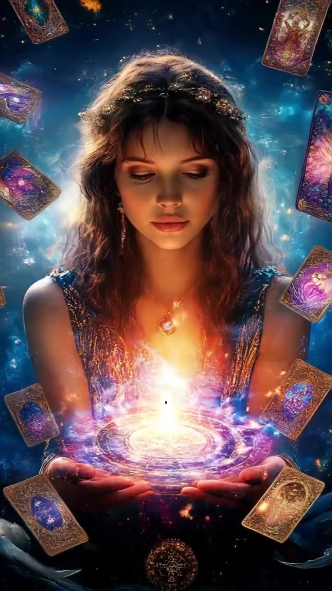
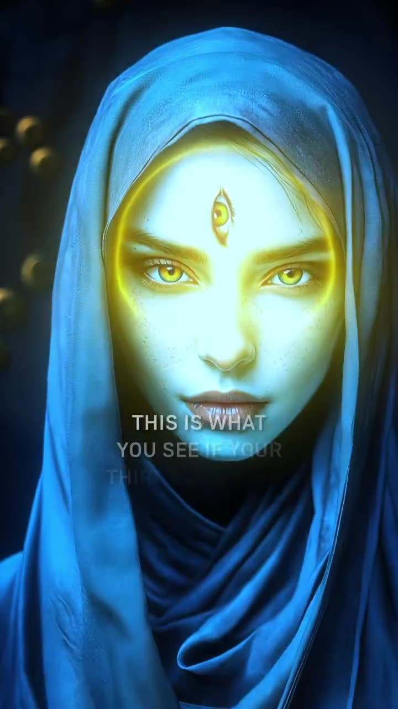
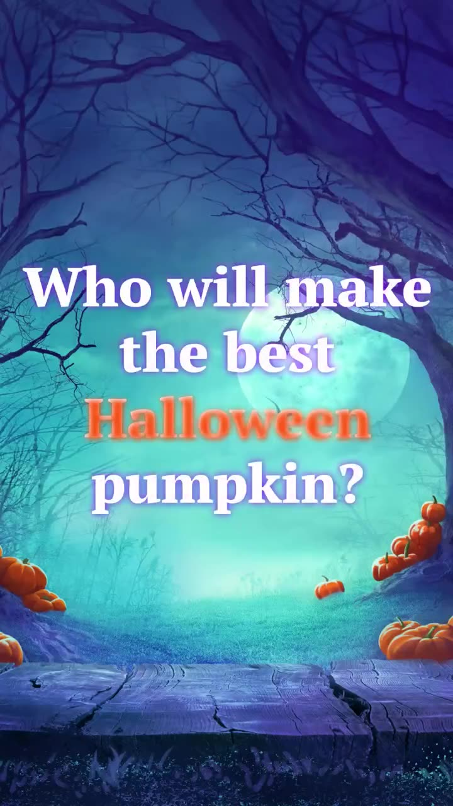
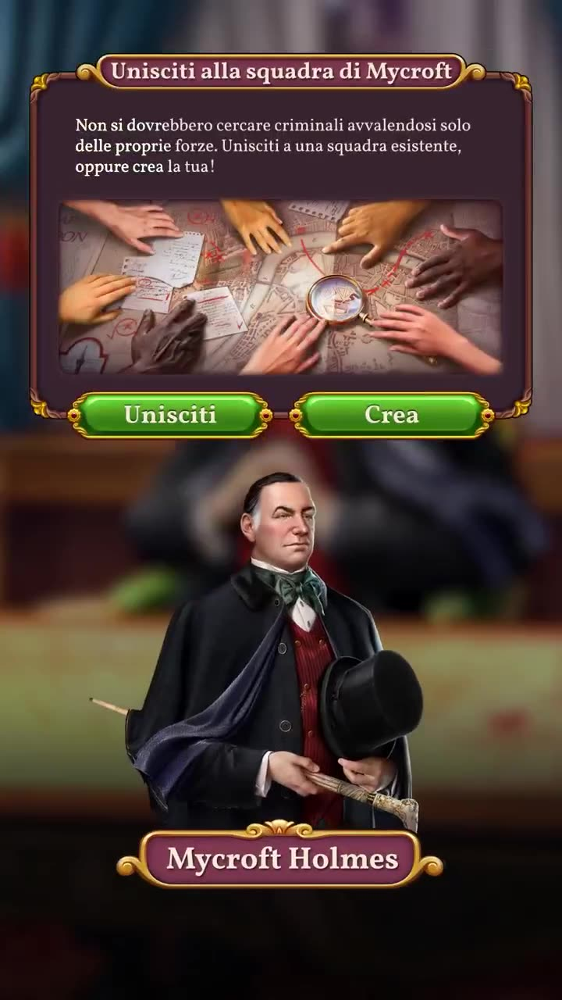
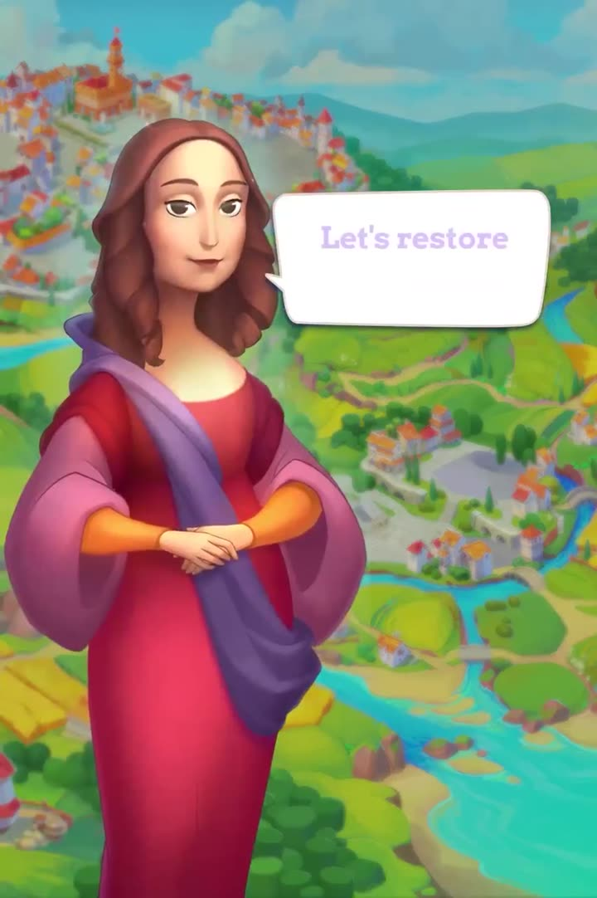
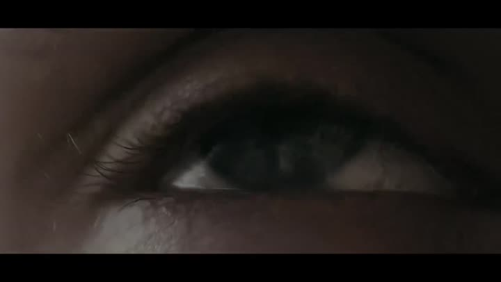
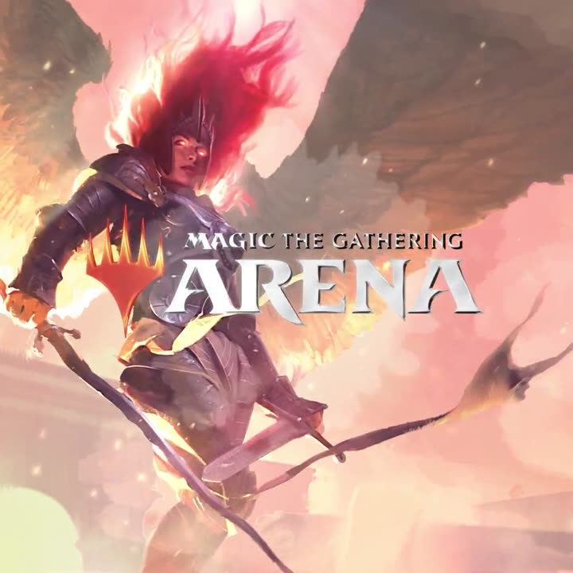
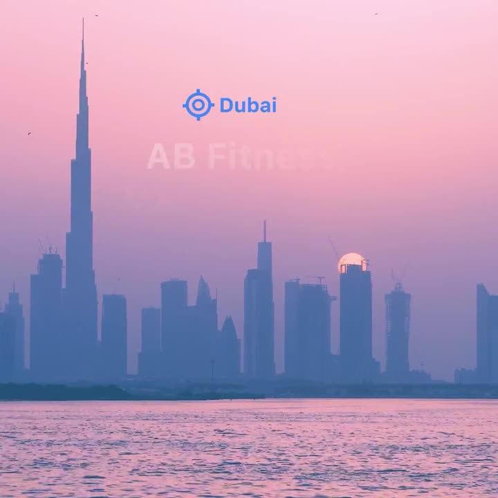
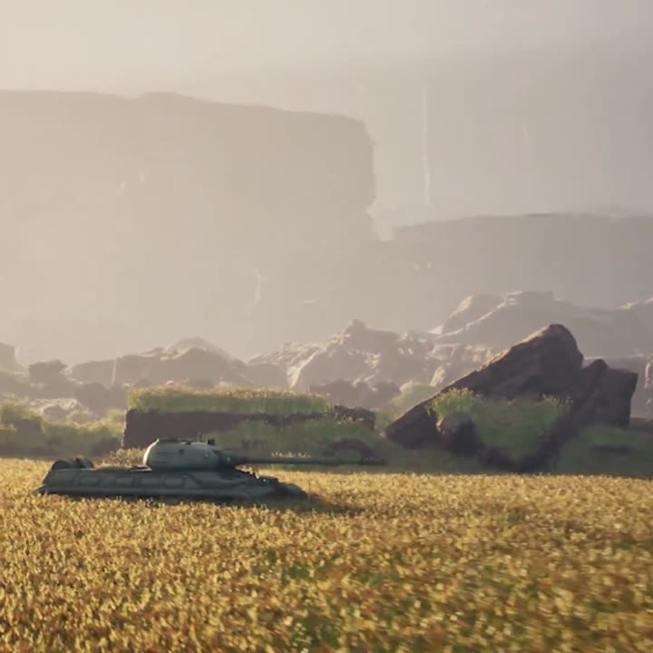
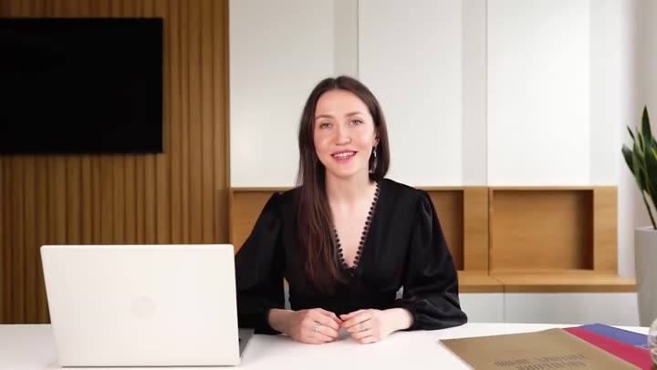
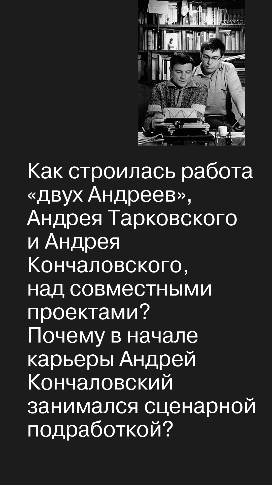
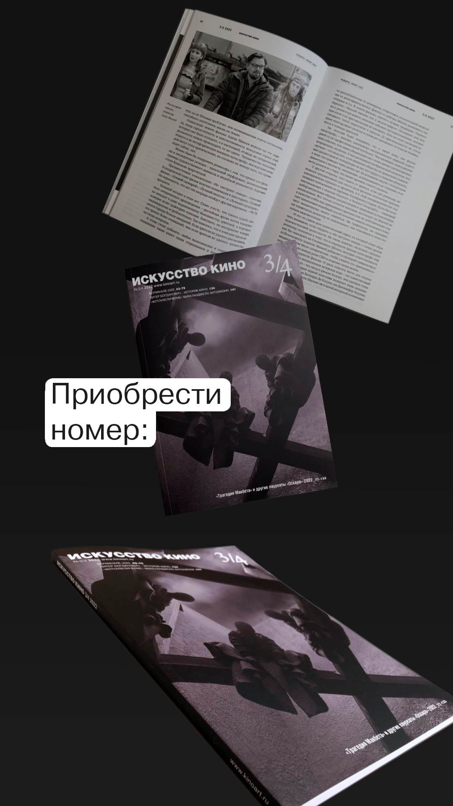
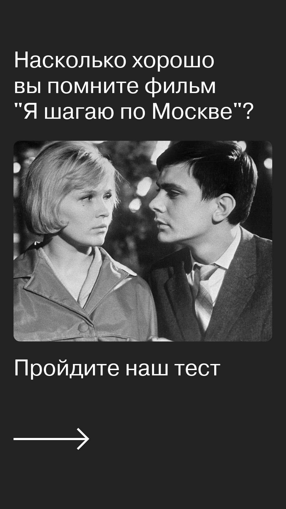
Writing
Кинокритика, литературные заметки, эссе об искусстве и играхFilm criticism, literary notes, essays on art and games
→ Все заметки в канале t.me/bluenoisee→ All notes at t.me/bluenoisee
Practice & Credits
Десять лет режиссёрско-монтажной практики и фестивальные кредитыTen years of directorial and editing practice plus festival credits

About
Наталия Терещенко, арт-директор в области генеративных медиа. Более одиннадцати лет в визуальных индустриях: режиссура, монтаж, моушн-дизайн, VFX, промпт-инженерия. Образование: режиссура мультимедиа программ (СПбГУП, 2017), киножурналистика (ШИКИ, 2022), VFX (VFX LAB, 2023). Короткометражный фильм «Стример» — приз за режиссуру фестиваля «Старкон», 2018.Natalia Tereshchenko, art director in generative media. Over eleven years in visual industries: direction, editing, motion design, VFX, prompt engineering. Education: multimedia direction (SPbGUP, 2017), film journalism (SHIKI, 2022), VFX (VFX LAB, 2023). Short film "Streamer" — Best Direction at Starcon, 2018.
Веду проекты от брифа до приёмки. Руковожу процессом в небольших группах и работаю внутри больших команд — в том числе в пайплайне международной студии. Выстраиваю пайплайн с нуля там, где его нет, провожу пресейл-презентации, работаю с креативными продюсерами, держу процессы в проектах с меняющимся брифом. В Setl Group развила корпоративный YouTube с нуля до более чем 25 000 подписчиков и запустила подкаст, вошедший в топ-5 рубрики.I run projects from brief to delivery. I lead processes in small groups and work inside larger teams — including the pipeline of an international studio. I build pipelines from scratch where none exist, run pre-sale pitches, work with creative producers and hold processes together when the brief keeps changing. At Setl Group I grew a corporate YouTube from zero to over 25,000 subscribers and launched a podcast that reached the top 5 of its category.
С нейросетями работаю системно: выстраиваю пайплайны генерации под эстетику продукта, тренирую модели под запрос, разворачиваю локальные серверы, пишу воспроизводимые промпты.I work with neural networks systematically: I build generation pipelines aligned with product aesthetics, train models for specific needs, deploy local servers and write reproducible prompts.
Исследовательский фокус — режиссура мультимедиа и геймдизайн с генеративными инструментами: сценарные структуры через нейросети, визуальный мир игры в смешанном пайплайне, real-time системы в TouchDesigner и Unreal Engine для инсталляций и выставок.Research focus — multimedia direction and game design with generative tools: script structures through LLMs, a game's visual world in a hybrid pipeline, real-time systems in TouchDesigner and Unreal Engine for installations and exhibitions.
Открыта к арт-директорским, режиссёрским, редакционным и продуктовым ролям: киностудии, продакшны, музеи и галереи, издательства, обучающие платформы и AI-продукты.Open to art director, director, editorial and product roles: film studios, production houses, museums and galleries, publishers, EdTech platforms and AI products.
Contact
Прямые каналы связи и текущий фокус поискаDirect contact channels and current focus
«Арт-директор, режиссёр мультимедиа, motion lead, prompt director, AI-продюсер визуального контента. В киностудиях, продакшнах, музеях, галереях, издательствах; на обучающих платформах и в AI-продуктах»."Art director, multimedia director, motion lead, prompt director, AI producer of visual content."